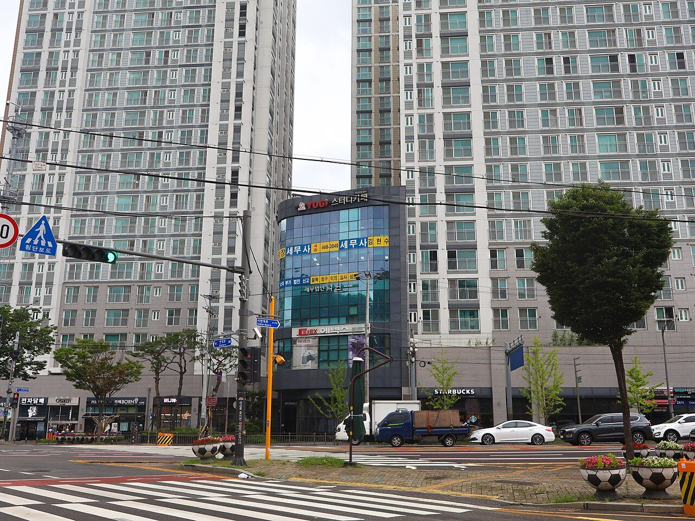
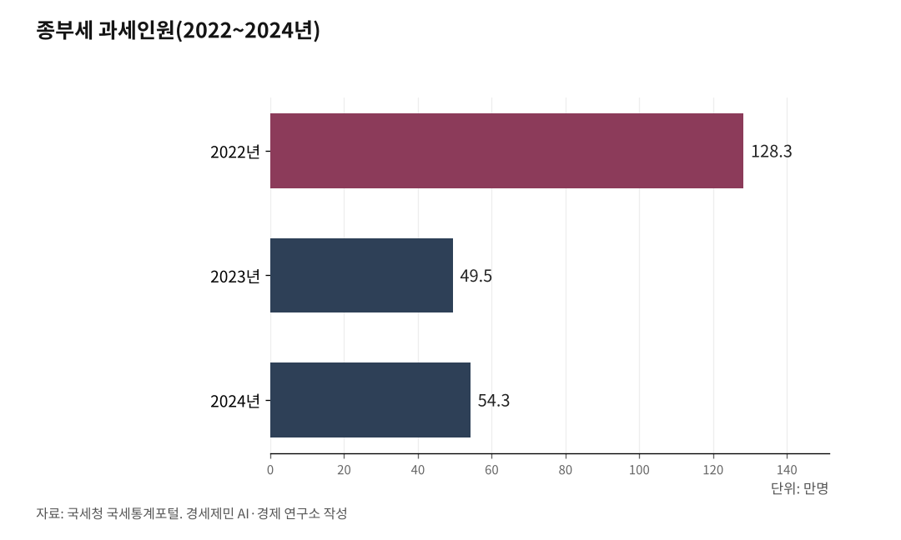

[한국경제 불편한 진실⑧] 재산세는 부자세금? 진짜 부자는 빠져나간다
2023년부터 공동주택 공시가격 현실화율 69% 4년째 동결
금융자산·법인은 과세 사각지대, 중산층 아파트만 겨냥
AI경세제민=김갑봉 기자 | 한국의 재산세와 종합부동산세(종부세)는 부자세금이라는 이름을 달고 있다. 그런데 진짜 부자는 빠져나가는 구조다. 2023년부터 공동주택 공시가격(정부가 매년 정하는 부동산 기준가격) 현실화율(공시가격이 시세를 반영하는 비율)이 69%로 4년째 동결돼 있고, 주식·예금 등 금융자산에는 보유세(부동산을 갖고 있는 것만으로 내는 세금)가 없다. 법인 명의로 부동산을 사면 세 부담도 줄어든다. 아파트 한 채 가진 중산층은 꼬박꼬박 내고, 수백억 자산가는 빠져나가는 설계다. 누가 내고 누가 빠지는가. 데이터가 구조를 보여준다.

재산세·종부세, 누가 내고 누가 빠지나
재산세는 토지·건물·주택 등 부동산을 가진 사람이면 누구나 낸다. 행정안전부 지방세통계연감을 보면 2024년 재산세 징수액은 14조8000억원이다. 종부세는 공시가격에서 공제금액(세금을 매기지 않는 기준선)을 뺀 뒤 공정시장가액비율(과세표준을 정할 때 적용하는 비율, 2023년부터 60%)을 곱해 과세표준을 산출한다. 1세대 1주택자 기준 공제금액은 12억원이다.
국세청 국세통계포털(TASIS)을 보면 2022년 종부세 과세인원은 128만3000명으로 역대 최고를 기록했다. 그런데 2023년 49만5000명으로 61.4% 급감했다. 1년 만에 78만8000명이 과세 대상에서 빠졌다. 세율 인하, 공제금액 상향, 공시가격 하락이 한꺼번에 작용했다. 2024년에는 서울 집값 상승 영향으로 54만3000명으로 소폭 반등했다.
재산세와 종부세를 합친 보유세 합계도 같은 흐름이다. 2022년 22조4000억원(재산세 15조7000억원, 종부세 6조7000억원)에서 2023년 18조5000억원으로 3조9000억원(-17.4%) 급감했다. 감소분의 대부분이 종부세였다. 2024년 19조3000억원으로 회복세를 보였지만 2022년 정점 대비 3조1000억원 낮다.

현실화율 69% 동결 4년, 실거래가 반영률은 떨어진다
재산세와 종부세는 실거래가가 아니라 공시가격을 기준으로 부과된다. 공시가격이 시세를 얼마나 반영하느냐가 실제 세 부담을 결정한다.
문재인 정부는 2020년 11월 현실화 로드맵을 만들어 2030년까지 시세의 90%까지 올리겠다고 했다. 국토교통부를 보면 공동주택 현실화율은 2021년 70.2%, 2022년 71.5%까지 올랐다. 윤석열 정부는 2023년 이를 2020년 수준인 69%로 되돌렸다. 이재명 정부도 2025년 11월 13일 중앙부동산가격공시위원회에서 2026년까지 같은 수준을 유지하기로 의결했다. 2023년부터 4년 연속 69% 동결이다.
문제는 그 사이 집값이 올랐다는 점이다. 한국도시연구소가 국토교통부 자료를 분석해 2025년 11월 10일 참여연대 등 10개 단체 공동 기자회견에서 발표한 내용을 보면 공동주택의 실거래가 반영률은 2020년 67.5%에서 2024년 61%까지 떨어졌다. 현실화율을 동결했는데 집값이 오르면 실거래가 반영률은 낮아진다. 시세 10억원짜리 아파트의 공시가격은 6억9000만원이다. 집값이 오를수록 세금 기준과 현실의 괴리는 벌어진다.
보유세 실효세율 0.15%, OECD 평균의 절반
실효세율(실제 세 부담 비율)은 부동산 자산 총액에서 보유세 총액이 차지하는 비율이다. 토지+자유연구소가 2025년 9월 발간한 'OECD(경제협력개발기구) 국가 부동산 보유세 실효세율 분석' 보고서를 보면 2023년 기준 한국의 보유세 실효세율은 0.15%다. OECD 30개국 비교 가능 최근연도 기준 평균 0.33%의 절반이 안 된다. 30개국 중 20위다. 이스라엘 1.24%, 미국 0.83%와 비교하면 5~8배 격차다.
그런데 GDP(국내총생산) 대비 보유세 비율은 다른 그림이 나온다. OECD 세수통계(Revenue Statistics) 2023년 기준 한국의 GDP 대비 보유세는 1.0%로 OECD 36개국 평균 0.91%보다 오히려 높다. 36개국 중 12위다. 이 역설의 이유는 한국의 부동산 자산 규모가 GDP 대비 과도하게 크기 때문이다. 한국은행·통계청이 2025년 7월 17일 발표한 국민대차대조표를 보면 2024년 말 기준 주택 시가총액은 7158조원으로 GDP의 약 2.8배에 달한다. 집값이 높으니 세금을 많이 내는 것처럼 보이지만, 집값 대비 실제 세 부담은 낮다.
집을 사고팔 때 내는 거래세(부동산을 사고팔 때 내는 세금)는 반대다. 2023년 기준 GDP 대비 거래세 비율은 한국이 1.66%로 OECD 36개국 중 1위다. OECD 평균 0.35%의 4.7배다. 보유세와 거래세를 합치면 2.67%로 OECD 평균(1.27%)의 2.1배다. 보유세는 낮고 거래세는 세계 최고인 거꾸로 된 구조다.
금융자산 수백억원, 재산세 한 푼 없다
재산세와 종부세는 부동산에만 부과된다. 주식, 채권, 예금 등 금융자산에는 보유세가 없다. 금융자산을 아무리 많이 가져도 재산세 고지서는 날아오지 않는다.
국가데이터처·한국은행·금융감독원이 2025년 12월 4일 발표한 가계금융복지조사를 보면 2025년 3월 말 기준 순자산(자산에서 부채를 뺀 금액) 상위 10% 가구가 전체 순자산의 46.1%를 점유한다. 2012년 통계 작성 이후 역대 최고치다. 순자산 지니계수(자산 불평등 지표, 0이면 완전 평등, 1에 가까울수록 불평등)는 0.625로 역시 역대 최고다.
NH투자증권 100세시대연구소가 2025년 4월 통계청 2024년 가계금융복지조사(2024년 3월 말 기준) 개별 가구 단위 원시자료를 분석한 결과 순자산 상위 1% 기준선은 33억원이다. 이 가구들의 총자산 평균은 61억원이고 이 중 금융자산이 11억4000만원에 달한다. 이 금융자산에는 보유세가 붙지 않는다.
법인 우회도 사각지대다. 법인 명의로 주택을 보유하면 종부세 적용에서 개인보다 유리한 구간이 생긴다. 정부는 2020년 7·10 대책으로 법인 주택 취득세·종부세를 강화했지만 허점은 남아 있다. 개인이 법인을 통해 세 부담을 줄이는 구조가 완전히 차단되지 않았다.
토마 피케티(Thomas Piketty, 프랑스 경제학자)의 r>g 공식이 한국에서 작동하는 방식이 여기 있다. 자본수익률(r)이 경제성장률(g)을 앞서는 구조에서 금융자산과 법인 보유 부동산이 과세 사각지대에 놓이면, 자산은 가진 쪽에 계속 쌓인다.
보유세 낮고 거래세 세계 1위, 선진국은 어떻게 하나
현행 보유세 체계는 세율보다 설계 구조에서 쟁점이 생긴다. 선진국 사례에서 다섯 가지 방향이 보인다.
첫째, 공시가격 현실화율을 단계적으로 끌어올리는 방식이 있다. 5년 안에 80% 수준까지 올리되 실거주 1주택 저소득층에는 세 부담 상한(전년 대비 세금 인상폭을 제한하는 장치)을 두는 방식이다. 실거래가 반영률이 61%에 묶여 있으면 불로소득 환수 효과는 제한적이다.
둘째, 거래세를 낮추고 보유세를 높이는 방향으로 세목 간 재편을 하는 나라가 늘고 있다. 취득세를 낮추면 매물 잠김이 풀리고 거래가 활성화된다. 영국은 인지세(SDLT·Stamp Duty Land Tax, 한국의 취득세에 해당)와 지방 보유세(council tax, 한국의 재산세에 해당)를 병행 운용하면서 2024년 10월 31일부터 추가주택에 기본세율 위에 5%포인트 할증을 적용하고 있다.
셋째, 다주택 투기 수요를 취득 단계에서 차단하는 제도가 작동하고 있다. 싱가포르는 2023년 4월 27일 개정한 추가 구매자 인지세(ABSD·Additional Buyer's Stamp Duty, 한국의 다주택자 취득세 중과에 해당) 제도로 자국민 2주택 취득 시 매매가의 20%, 3주택 이상은 30%를 부과한다. 싱가포르 통계청 기준 2023년 자가 소유율은 약 89%다.
넷째, 금융자산 과세를 도입한 나라가 있다. 노르웨이는 주식·채권 등 금융자산을 포함한 순자산에 부유세(일정 금액 이상 자산을 가진 사람에게 매기는 세금)를 부과한다. 금융자산과 부동산을 동등하게 과세해 조세 형평성을 확보하는 방식이다. 2025년 현재 노르웨이·스페인·스위스 3개국이 순자산세(보유 자산 전체에 매기는 세금)를 운용하고 있다.
다섯째, 법인 보유 부동산 과세 허점을 막는 나라가 있다. 싱가포르는 2023년 4월 27일부터 법인을 통한 주택 간접 보유에 최대 65%의 취득세 중과를 적용해 우회로를 봉쇄하고 있다.
참고문헌
· "지방세통계연감", 행정안전부, 2021~2024.
· "종합부동산세 결정현황", 국세청 국세통계포털(TASIS), 2021~2024.
· "[보도참고] 2025년 종합부동산세 고지", 기획재정부, 2025.11.26.
· "2026년 부동산 가격 공시 추진안 심의·의결 결과", 국토교통부, 2025.11.13.
· "2024년 국민대차대조표(잠정)", 한국은행·통계청, 2025.7.17.
· "2025년 가계금융복지조사 결과", 국가데이터처·한국은행·금융감독원, 2025.12.4.
· "OECD 국가 부동산 보유세 실효세율 분석(28호)", 토지+자유연구소, 2025.9.
· "공시가격 현실화율 동결 비판 공동 기자회견", 한국도시연구소·참여연대 등 10개 단체, 2025.11.10.
· "상위 1% 부자가구 보고서", NH투자증권 100세시대연구소, 2025.4.
· "2024년 주택소유통계", 국가데이터처, 2025.
※ 이 기사는 AI 프로그램 클로드 오퍼스 4.6을 활용해 작성했습니다.
사진 출처
· [대표사진] LandAndTree, "Anyang Myeonghak Station Yu Bora The Smart Apartment 20240722.jpg", 위키미디어 공용, CC0, https://commons.wikimedia.org/wiki/File:Anyang_Myeonghak_Station_Yu_Bora_The_Smart_Apartment_20240722.jpg
※ 이 브리핑은 인공지능을 활용해 작성했습니다.
관련기사
- [경세제민]상속세 과세 대상 6%, 나머지 94%는 왜 겁먹나
- [경세제민] 한국경제 불편한 진실⑧-하
- [주식공부] 코스피 12.13% 하락, 자사주 끊긴 자리에 선 개인
- 노후계획도시 선도지구, 분담금은 용적률 두 구간에서 갈린다
저작권자 © AI경세제민 무단전재 및 재배포, AI학습 및 활용 금지